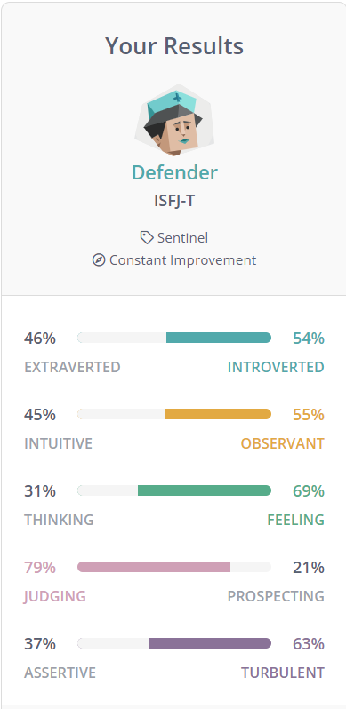
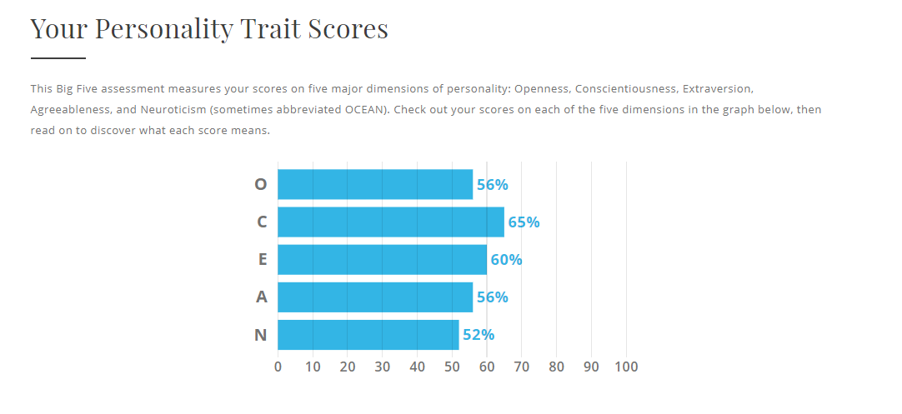

My Profile
Personal Information:
My name is Jingkai Zhang. My student number is 3641705, and zzvsjs@foxmail.com is my personal e-mail address.
I finished the foundation studies in june, so this is my first semester in university.
I am from China, so my first language is Chinese. I can also speak Mandarin and Cantonese.
I like playing video games and reading books, and I especially like games on the Switch. I also like eating spicy food.
Interest in IT
- I really like computer graphics. I first became interested in computers when I was in elementary school.
- I got interested in IT because my father liked to read computer magazines, and I was influenced by him to read them and find IT interesting.
- However, I don't have much computer experience, this is because I rarely used a computer until university. I had a very hard time in high school.
Talking about my computer knowledge. I only know very basic C program, HTML and Css. I'm not very good with linux and Mac OS at the moment. - There are three reasons for choosing RMIT. The first is that RMIT attaches great importance to employability skills, which I think will be of great help to my future.
The second reason is RMIT is right in the city, which helps me save time so that I can concentrate on my studies. If the school is in the suburbs, I may have to spend a lot of time on public transport.
The final point is that my academic performance is not enough to go to other school.(😂) - During my studies. I want to understand how computers work, improve my cooperation and English skills. In addition, I also want my math skills, logical thinking and social skills to be much improved.
Ideal Job


Job advertisement web page click here
This job is call Senior C++ Engineer.
- I understand this job provides exposure to the development process of Hollywood special effects production software(Blackmagic Fusion), and also work with many good software engineers.
- This job involves writing code and working with the development team to fix bugs in the program.
- The job also gives me the opportunity to develop graphics rendering engines and exposure to advanced rendering techniques.
- This career requires more than five years of experience in C++ development, as well as knowledge of different scripting languages and outstanding computer graphics. The most crucially this job requires a doctoral degree.
- In addition to the above requirements, this career also requires excellent collaboration skills and experience in cross-platform development.
- Nowdays, I only have a very basic C programming skill and only know how to create a simple web page. My collaboration skills are not very good. It's not just because I rarely work with others, our high school doesn't require us to work with others on assignments either.
- I currently only have a high school education.
- Firstly, I would need to complete a bachelor's degree first, followed by a master's degree. Since a PhD is very difficult, I will consider it further after completing a Master's degree.
- Secondly, I would also step up my collaboration with others during this time to complete assignments and extracurricular interests.Being more proactive in communicating with others
- Thirdly, I also need to become proficient in C++, which means. I'm going to be doing a lot of practice. This can be done through programming classes, searching for topics online and finding part-time programming jobs
- Foudly, I will learn a scripting language in year two holidays.I currently choose to study Python.
- Fifth, I would complete advanced maths in my first year holiday which is very helpful in improving logical thinking.
- In the end, I decided to look for an internship with a company in my final year (if I think I'm good enough). This is a very good way to get work experience.
Personal Profile
The results of an online Myers-Briggs test：
The results of an online learning style test.：

The results of The Big Five Personality Test：

There result shows that I am a clear defender, visual learner and nomal personality trait, which means my traits are average.
This can help me evaluate my team performance:
- I enjoy sharing my knowledge and experience within a team and I like to deliver to a high standard.
- When I decide to do something in a team, I don't give up easily, even if my co-workers are already feeling tired.
- I do like to learn visually, and when I'm working with a team, I am more likely to see the project process rather than hear someone explains.
- Based on the results, I would be more rigid. It's true, I'm more likely to stick to the "right" way in a team than to use a flexible approach.
- My Trait, such as openness, conscientiousness, extraversion, agreeableness and neuroticism are nomally.
It makes it hard for me to do things that require specific abilities, like someone with an excellent imagination, and they can go into design.
- According to the test above, I'm an Otherist, which means I'm not good at releasing stress. Having people on the team
who are good at activating people ensures that I can release stress. - I need to make sure we have experts on the team, which will allow us to complete our work in our area of expertise faster.
- The team also needs flexible thinkers, which ensures that our team is not rigid in its thinking and is more receptive to new technologies and ideas.
- Finally, the team also needs to have people with different styles of learning, as different learning styles allow the team to better receive information from different sources. This to keep the team innovative.